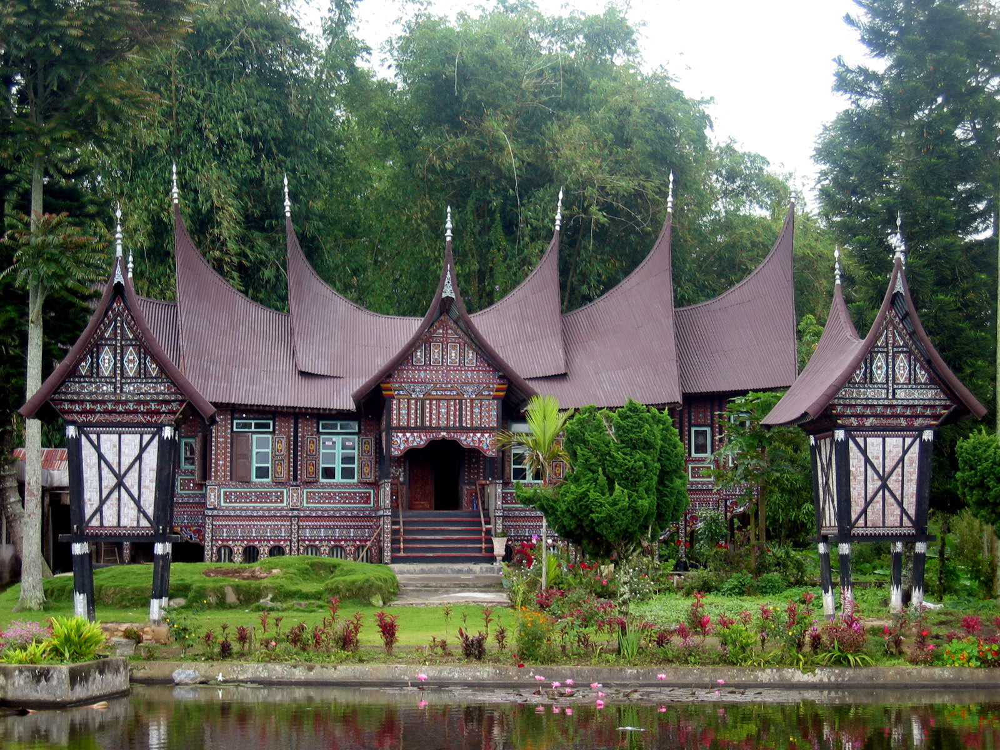
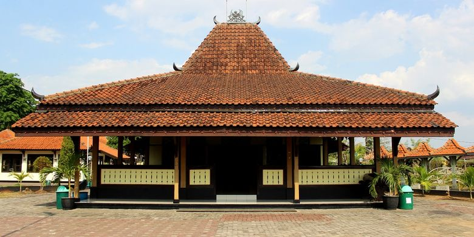
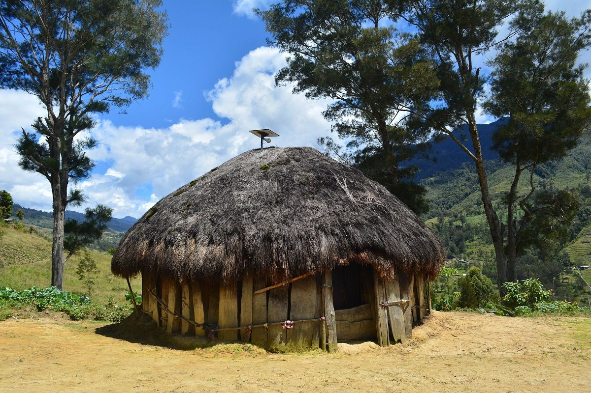
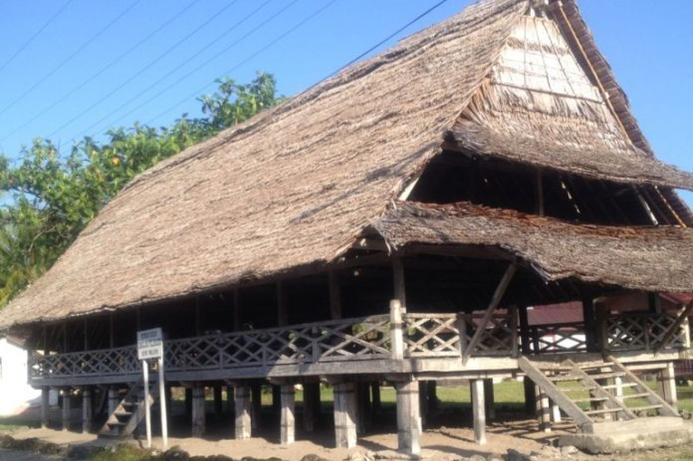

Warisan Arsitektur Indonesia
Kenali lebih dekat keunikan dan sejarah di balik setiap rumah adat dari berbagai penjuru Nusantara.
Galeri Rumah Adat

Rumah Gadang
Sumatera Barat

Rumah Joglo
Jawa Tengah & DIY

Rumah Honai
Papua Pegunungan
Rumah Tongkonan
Sulawesi Selatan

Rumah Baileo
Maluku